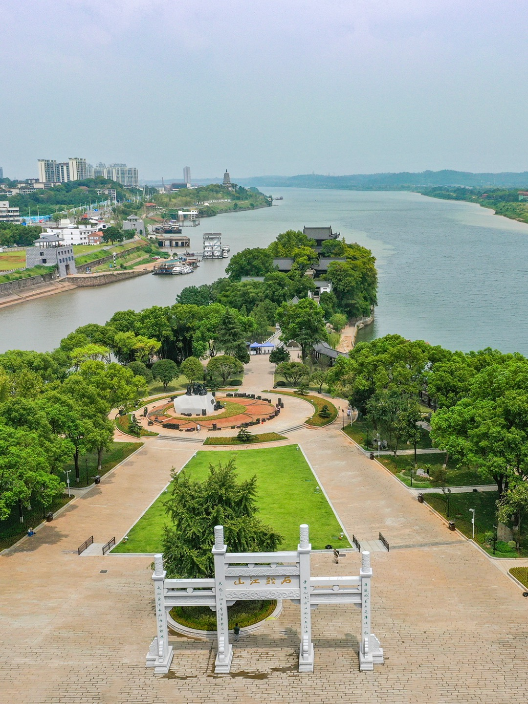
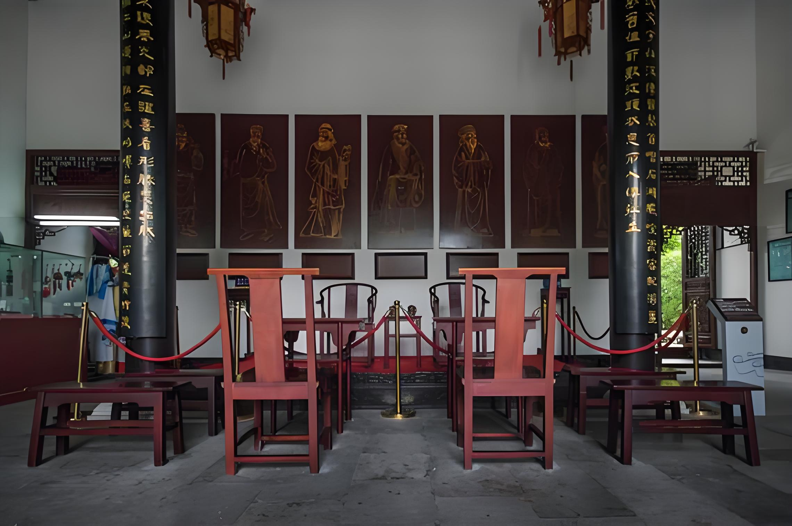
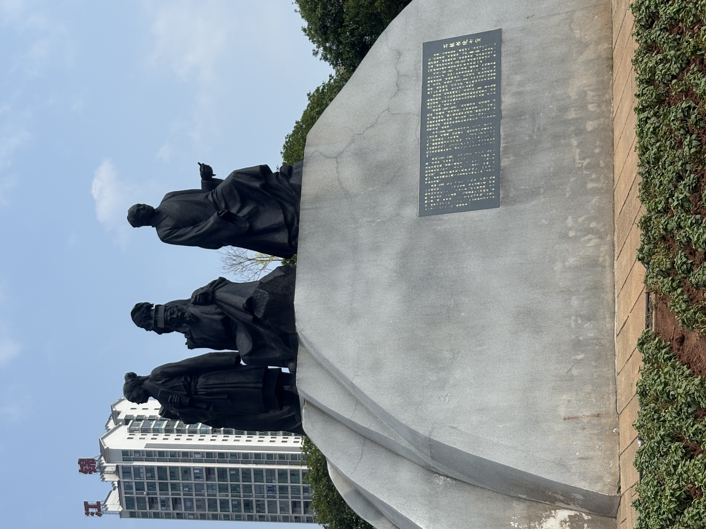
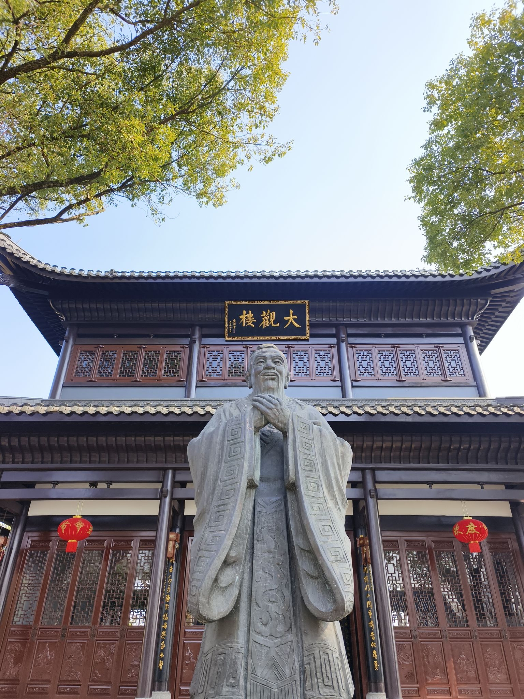
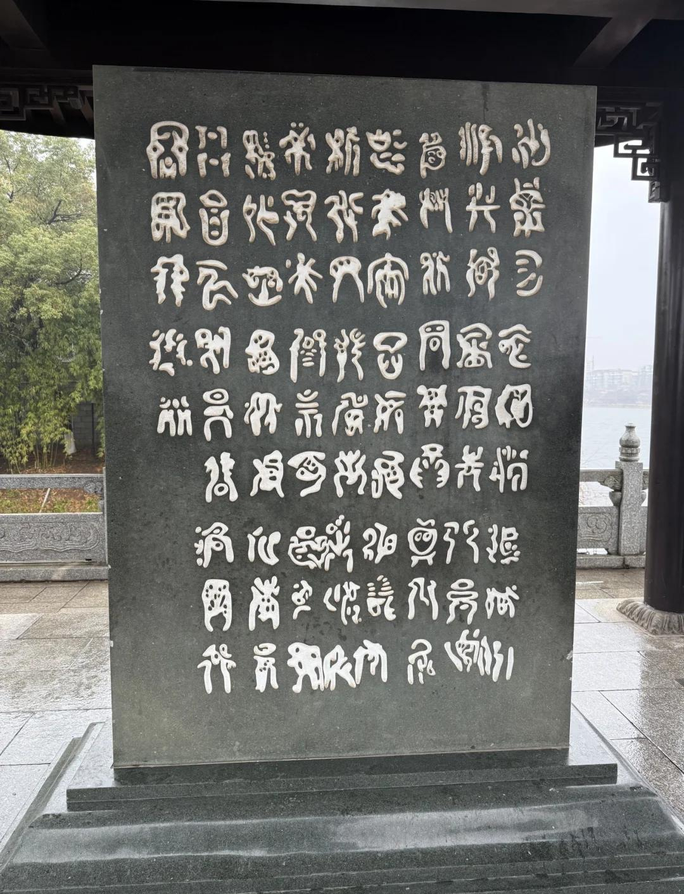
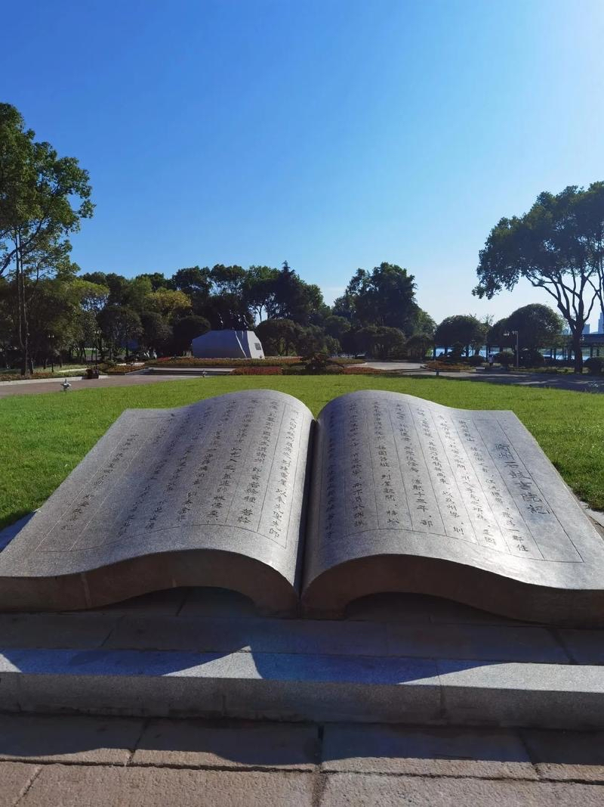

千年三江学府 · 湖湘文脉源头 · 四大书院名宗

“石鼓据蒸湘之会，江流环带，最为一郡佳处。”——《衡州府志》
石鼓书院坐落于湖南衡阳城北的石鼓山，湘江、蒸水、耒水三条江河在此交汇奔涌，山石临江耸立，江雾朝夕缭绕，得天独厚的山水环境，造就了这座闻名天下的古书院。书院始建于唐代元和五年，距今已有一千二百余年的岁月，是我国历史上创办时间较早的官私结合的书院，位列宋代“天下四大书院”，也是湖湘文化最早的重要发源地。
不同于大多坐落于深山密林之间的书院，石鼓书院直接屹立于江水之畔，登高即可俯瞰浩浩三江，江风穿亭而过，山水与人文融为一体。千百年间，书院历经战火浩劫，楼阁多次倾毁，却总被一代代士人、地方官员重新修葺复建。屋舍虽屡兴屡废，但崇文重教、传道育人的精神从未断绝。四方士子负笈而来，文人墨客登临题咏，留下浩如烟海的诗文碑刻，也让石鼓书院收获了“江山书院第一流”的美誉。
在漫长的古代，这里不仅是读书应试的学堂，更是思辨论道、传播思想的学术阵地。理学思想在此传播，家国情怀在此孕育，深深影响了整个湘南地区的民风教化，也为后世留存下极为珍贵的文化遗产。

石鼓书院千余年的发展史，也是一部古代书院兴衰沉浮的缩影。它从民间隐居讲学起步，一步步得到朝廷认可。
建筑可以被战火摧毁，但崇文向学的精神代代传承。
石鼓山临江风景绝佳，加上书院讲学之风兴盛，千百年间，无数历史名人在这里留下足迹。有的在此开坛布道，传播思想；有的少年在此苦读，积淀学识；有的游历到此，挥毫写下传世诗文。先贤的思想风骨，沉淀为石鼓书院精神内核的重要部分。

唐代隐士，不求仕途，石鼓山筑屋授徒，开启书院千年序幕。
亲临书院讲学，传播理学，重塑书院治学风气。
倡导经世致用，知行合一，塑造湖湘士人精神。
少年求学石鼓，家国气节与思辨影响后世深远。
韩愈、柳宗元、范成大、文天祥等，亦登临石鼓，留下大量诗文篇章。他们或感怀山水，或寄寓家国，丰富了石鼓的文学底蕴。

当代复建的石鼓书院严格参考明清时期的建筑形制，依山就势，顺着石鼓山的地势层层铺展。黛瓦飞檐，木柱回廊，白墙木构，既有古代学府庄重肃穆的气质，又融合江南园林的雅致灵动。建筑群与脚下奔腾的三江相互映衬，形成国内少有的“临江书院”独特风貌。
书院主体楼阁，登高俯瞰三江，昔日讲学藏书之所。
始建唐代，凭栏观三江汇流，历代文人题咏最多。
敬奉先贤忠义气节，体现书院德育教化传统。
复刻历代碑刻诗文，保存千百年笔墨实物。
整座书院建筑顺着山势错落排布，亭、祠、楼、廊互相呼应，人文建筑与自然山水完美相融，走到每一处都可以眺望江水，体会古人读书观景的意境。
石鼓书院的价值，早已超出一组古建筑本身。它是湖湘文化形成与发展过程当中极为重要的一环，与岳麓书院一南一北相互呼应，共同构筑起湖湘文化厚重的精神底色。
“湖湘学者，务实践，重气节，经世而致用。”
千百年以来，书院之内碑刻林立，诗词文赋浩若烟海。名士讲学留下的讲义，学子诵读写下的篇章，官员重修书院撰写的碑记，大量文字被镌刻于石碑之上。这些遗存不只是文学作品，更是研究古代书院制度、湘南地域社会、理学传播历程珍贵的实物史料。
博览典籍，探求义理，明辨是非善恶。
躬身实践，心怀家国，关切民生世事。
时代变迁，书院早已不再是古代的学堂。但作为文化地标，它承载着历史记忆，供后人与先贤跨越时空对话。


传承千年书院文脉，并不只限于参观古迹、欣赏亭台楼阁。真正的传承，是读懂藏在碑刻山水背后的精神内核。回望先贤往事，传统文化的赓续，既在于研读典籍感悟历史，也落在当代人的日常修养与实践之中。
可研读《石鼓书院志》、历代碑拓、衡州地方志，进一步了解书院制度与湖湘理学发展脉络。
江水奔流不息，书卷代代相传。千年书院留给我们的，不仅是一处风景，更是一份厚重的精神馈赠。